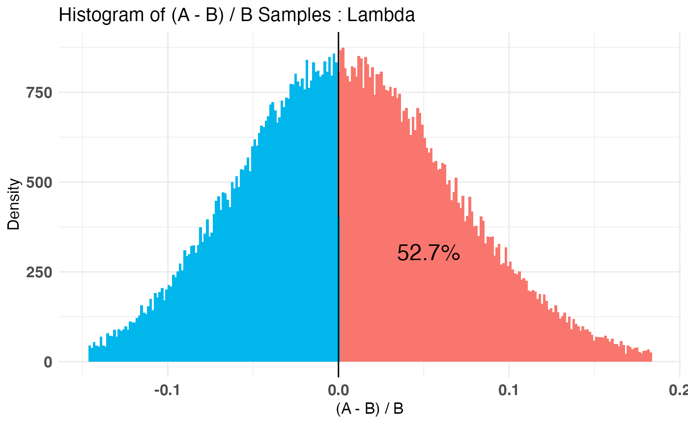
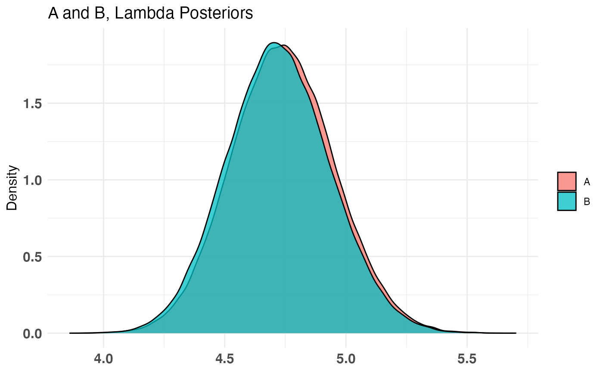

Plot bayesTest objects
Plot method for objects of class "bayesTest".
# S3 method for bayesTest plot(x, percentLift = rep(0, length(x$posteriors)), priors = TRUE, posteriors = TRUE, samples = TRUE, ...)
Arguments
| x | an object of class "bayesTest" |
|---|---|
| percentLift | a vector of length(x$posteriors). Each entry corresponds to the percent lift ((A - B) / B) to plot for for the respective posterior in x. Note this is on a 'point' scale. percentLift = 5 implies you want to test for a 5% lift. |
| priors | logical indicating whether prior plots should be generated. |
| posteriors | logical indicating whether posterior plots should be generated. |
| samples | logical indicating whether sample plots should be generated. |
| ... | graphics parameters to be passed to the plotting routines. (For example |
Note
You can either directly plot a bayesTest object (in which case it will plot interactively), or you can save the plot
object to a variable and extract what you need separately. If extracted, you can treat it like any ggplot2 object and
modify it accordingly.
Examples
A_pois <- rpois(100, 5) B_pois <- rpois(100, 4.7) AB1 <- bayesTest(A_pois, B_pois, priors = c('shape' = 25, 'rate' = 5), distribution = 'poisson') plot(AB1)#> Warning: Removed 1 rows containing missing values (geom_vline).plot(AB1, percentLift = 5)p <- plot(AB1) p$posteriors$Lambda# NOT RUN { p$posteriors$Lambda + ggtitle('yolo') # modify ggplot2 object directly # }